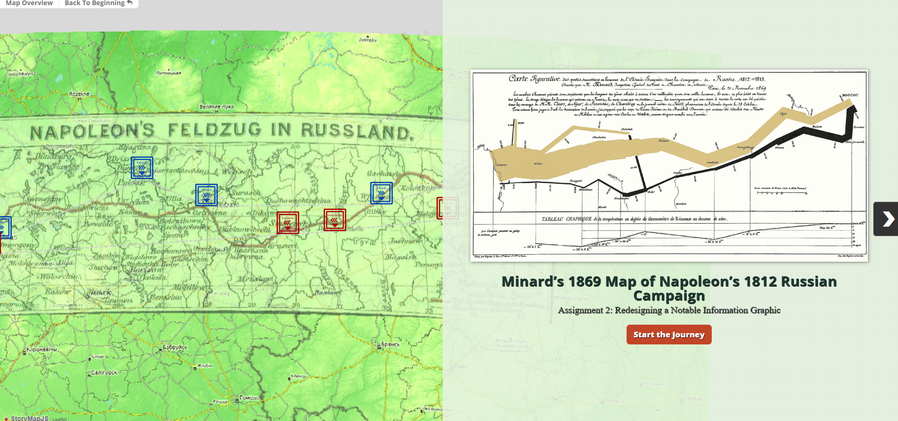
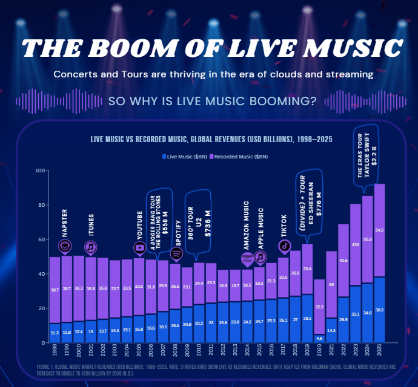

Assignment 1 – OMG it’s so crowded!
A narrative comic that uses real live-music revenue data to explain why concerts feel so crowded today. The piece combines dialogue, illustration, and embedded charts to connect post-pandemic demand, long-term industry growth, and changing audience behaviors in a playful but analytically grounded way.
Assignment 2 –Reimagining Minard’s Napoleon Map in StoryMapJS
A redesign of Charles Minard’s classic 1869 graphic on Napoleon’s 1812 Russian campaign, translated into an interactive StoryMapJS experience. The project breaks the original dense, multi-encoded chart into a step-by-step geographic narrative that combines location, time, temperature, and troop losses in a more guided and accessible way.
The Boom of Live Music – Explanatory Infographic
A long-form infographic that explains why live music is booming in the era of streaming. The piece combines multiple datasets on global revenues, format shifts, post-pandemic rebounds, generational change, and social media to present four complementary theories behind the rise of concerts and tours, all within a cohesive visual narrative.
Assignment 4 – [Project Title]
Summary of Assignment 4. Position this as a mini case study: what was the problem, what data and tools did you use, and what does the final visualization enable for decision-makers? Highlight any collaboration or iteration based on feedback.
Selected in-class tutorials
Tutorial Project 1 – [Tool / Technique]
Briefly describe which tutorial this is based on (e.g., Flourish, Tableau, StoryMap, etc.), what you changed compared to the in-class example, and why those changes make the visualization more effective for a real audience.
Tutorial Project 2 – [Tool / Technique]
Same idea here: summarize the context of the tutorial, what specific skills it demonstrates (e.g., interactivity, mapping, animation), and how you extended or cleaned up the original class example.